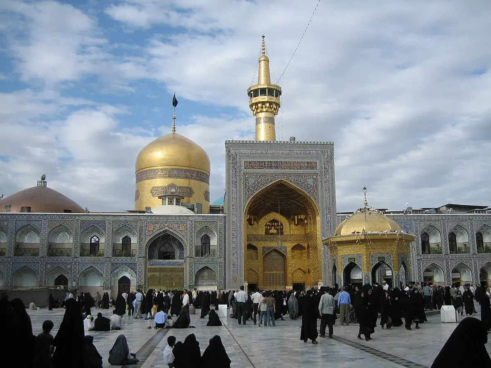

دليل الزائر الخليجي · السفر إلى مشهد
السفر من دول الخليج إلى مشهد: الرحلة والوثائق والإقامة

إذا كنت تخطط لزيارة مشهد من الكويت أو البحرين أو قطر أو عُمان أو السعودية أو الإمارات، فابدأ بتحديد جواز السفر الذي ستسافر به ومدينة المغادرة. فالمقيم في إحدى دول الخليج قد يخضع لقواعد جنسيته الأصلية، وليس لقواعد مواطني الدولة التي يقيم فيها.
الرحلات الجوية إلى مشهد
تتغير خيارات الطيران بحسب الموسم والناقل وتاريخ السفر. قد تظهر رحلة مباشرة في بعض الفترات، بينما تتطلب تواريخ أخرى التوقف في مدينة وسيطة. قارن المدة الكلية ووزن الأمتعة ووقت الانتظار وسياسة التغيير، وتأكد من أن التذكرة قابلة للشراء قبل دفع أي مبلغ غير مسترد.
متطلبات الدخول حسب الجنسية
تختلف الإعفاءات ومدة الإقامة بحسب الجواز والغرض من الزيارة. بعض الجوازات الخليجية العادية قد تستفيد من إعفاء سياحي محدود، بينما لعُمان ترتيبات إعفاء مختلفة. راجع دليل التأشيرة حسب الجنسية ثم تحقق من بوابة وزارة الخارجية الإيرانية قبل الحجز.
تنبيه خاص لمواطني الإمارات
تنشر وزارة الخارجية الإماراتية تحذيراً بمنع مواطني الدولة من السفر إلى إيران. هذا التنبيه يخص المواطنين الإماراتيين، وهو مستقل عن الإعفاء الإيراني. أما المقيمون في الإمارات من جنسيات أخرى، فعليهم التحقق من قواعد جوازاتهم ومن تحذيرات بلدهم الأصلي. راجع صفحة وزارة الخارجية الإماراتية.
اختيار الإقامة في مشهد
إذا كانت الزيارة للحرم، قارن موقع الفندق والبوابة التي ستستخدمها ونوع الغرفة وسياسة الإلغاء. للعائلات الممتدة قد تكون الشقة الفندقية مناسبة، بينما قد يفضل آخرون خدمات الفندق. ابدأ من مقارنة الفنادق قرب الحرم، ثم اطلب السعر النهائي لتواريخك قبل الدفع.
ما الذي تضعه في الميزانية؟
احسب تذاكر الذهاب والعودة، والنقل من المطار، والإقامة، والطعام، والاتصالات، والتنقل داخل مشهد، وأي رسوم إضافية. أضف مبلغاً احتياطياً لتغيير الرحلة أو تأخرها. لا تعتمد على أسعار قديمة أو عرض لا يوضح ما يشمله.
تفاصيل تختلف من بلد إلى آخر
- الكويت والبحرين وقطر: تحقق من الرحلات المتاحة في تاريخك ومن مدة الإعفاء السياحي وشروطه.
- عُمان: راجع ترتيبات الإعفاء الخاصة بالجواز العُماني ومدة الإقامة المسموحة.
- السعودية: تحقق من تعليمات السفر الصادرة عن الجهات السعودية ومن متطلبات الدخول الإيرانية قبل شراء التذكرة.
- الإمارات: يجب على المواطن الإماراتي اتباع تحذير وزارة الخارجية؛ أما المقيم من جنسية أخرى فيراجع قواعد جوازه.
قبل الوصول إلى مشهد
أرسل موعد الوصول وعدد المسافرين واحتياجك للإقامة أو النقل إذا رغبت في الاستفسار عن تنسيق محلي. يوضح نطاق الخدمة والسعر والتوفر كتابةً قبل أي اتفاق. ويمكنك مراجعة دليل الانتقال من المطار إلى الحرم ودليل تكلفة الرحلة قبل المغادرة.
أسئلة شائعة
هل توجد رحلات مباشرة من كل دول الخليج إلى مشهد؟
لا يمكن ضمان ذلك لكل مدينة أو تاريخ. راجع جداول الناقلين قبل الحجز.
هل يحتاج كل زائر خليجي إلى تأشيرة؟
يعتمد الأمر على الجنسية ونوع الجواز والغرض ومدة الإقامة. راجع القواعد الخاصة بجوازك.
هل يستطيع المواطن الإماراتي السفر اعتماداً على الإعفاء الإيراني؟
تنشر وزارة الخارجية الإماراتية تحذيراً بمنع مواطني الدولة من السفر إلى إيران؛ يجب اتباع التعليمات الإماراتية الحالية.
أدلة مرتبطة
- دليل السفر إلى مشهد
- شروط التغيير
- من مطار مشهد إلى الحرم
- تأشيرة إيران للزائر العربي
- فنادق قرب الحرم
- فندق قصر مشهد والغرف والأجنحة الملكية
إذا كنت تخطط لزيارة مشهد، أرسل موعد السفر وعدد المسافرين واحتياجك، وسنراجع التفاصيل الممكن تنسيقها قبل الاتفاق. تواصل مع حسين عبر واتساب